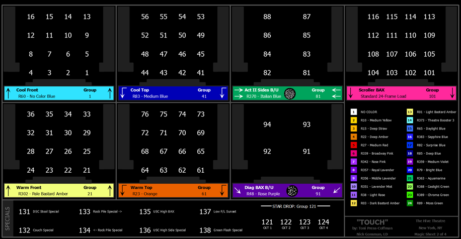
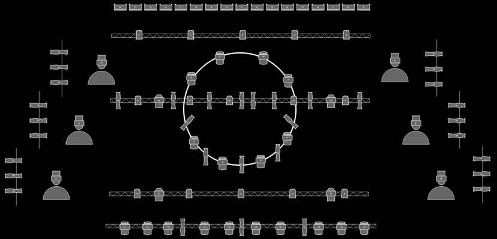

Magic Sheets are user created interactive displays that offer customizable views for displaying data and programming. Magic Sheets are comprised of objects that are tied to show data, such as channels and palettes.
The following are two examples of magic sheets. For additional examples, see Examples of Magic Sheets .

